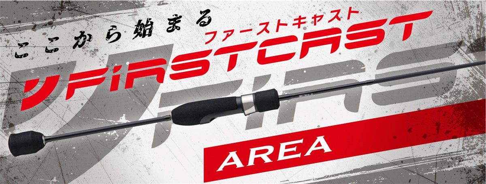
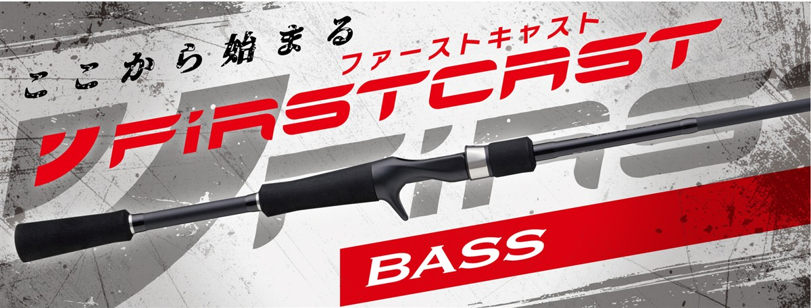

NEWファーストキャスト エリアモデル
（NEW FIRSTCAST Area model）
NEWファーストキャスト エリアモデル（NEW FIRSTCAST Area model）はMajor Craft（メジャークラフト）のエリアトラウトロッドです。
ショアルアーゲームロッドの定番ファーストキャストがリニューアルしたシリーズで、税込6,600円で、スプーンもプラグも扱えるので、管理釣り場を始める「最初の1本」に向いています。
初級者から中級者まで満足できるコスパ最強ロッドで、はじめてのエリアトラウトを始めるのに最適の1本です。

画像出典:メジャークラフト公式HP
スペック
- メーカー
- Major Craft（メジャークラフト）
- タイプ
- エリアトラウトロッド（スピニング）
- モデル数
- 2モデル
- 長さ
- 6'0"
- 継数
- 2ピース
- 対応ルアー
- 0.9〜5g
- ライン
- 1.5〜4lb
- PEライン
- 0.2〜0.6号
- 自重
- 94g
- アクション
- レギュラーファースト
- 価格
- 6,600円（税込）
- 発売
- 2026年10月
▼今すぐチェック
ファーストキャスト エリアの特徴
管理釣り場の最初の1本に向いた、全2モデルのエリアロッド
-
初級者から中級者まで満足のコスパ最強ロッド
価格は税込6,600円から。手頃な価格ながら初級者から中級者まで満足できる内容で、はじめてのエリアトラウトを始めるのに最適の1本。
-
操作性を重視したブランクス
中弾性カーボンをメインクロスに採用。キャストのしやすさとルアーの操作性の良さを考えたブランクス設計になっている。
-
ライントラブルを減らすKガイド
富士工業製のKガイドフレームを採用。強さと軽さを両立し、ライントラブルも減らしている。
-
使い手を選ばないグリップ
握りやすさと操作性を重視した、バランスの良いグリップデザイン。リールシートはダウンロック。
ファーストキャスト エリアの使い方
まずは軽いスプーンをキャストして、一定の速さで巻きましょう。
反応があったレンジと巻きスピードを覚えて、同じコースを通すのが基本です。慣れてきたらミノーやシャロークランクも試してみましょう。
ファーストキャスト エリアがおすすめの人
管理釣り場（エリアトラウト）を始めたい人に向いたシリーズです。
スプーン中心ならUL、プラグや広いポンドも楽しみたいならLが候補です。
手頃な価格で始められるので、初めてのトラウトが釣れるまでの1本としておすすめです。
ワンポイント
迷ったら公式が「最初の1本」にすすめるFCAT-602ULから検討しましょう。広いポンドで遠投したい時はFCAT-602Lが向いています。
ファーストキャスト エリアモデルの使い分け
| モデル | 長さ／対応ルアー／自重／価格（税込） | 得意な場面 |
|---|---|---|
| FCAT-602UL | 6'0"／0.9〜4g／94g／6,600円 | 初心者に一番おすすめ。スプーンの操作性が良く、プラグも扱える最初の1本に |
| FCAT-602L | 6'0"／0.9〜5g／94g／6,600円 | スプーンからプラグまで。遠投性に優れ広いポンドに |
どちらも6フィートで価格も同じです。スプーン中心か、プラグや遠投もしたいかで選びましょう。
ファーストキャスト エリアの番手別チェック
番手ごとの特徴と、購入先のリンクです。
FCAT-602UL
6'0"／0.9〜4g／94g／6,600円
初心者に一番おすすめしたいのがこの番手です。公式もエリアトラウトの定番で「最初の1本」におすすめとしています。0.9〜4gのスプーンを操作しやすく、プラグも扱えるので、管理釣り場の基本の釣りをこれ1本で始められます。ラインは1.5〜3lbが適合です。迷ったら、まずこの番手を選びましょう。
▼今すぐチェック
FCAT-602L
6'0"／0.9〜5g／94g／6,600円
ULと同じ6フィートで、0.9〜5gと少し重いルアーまで対応するモデルです。公式はスプーンからミノー、シャロークランクまで楽しめ、遠投性に優れて広いポンドにおすすめとしています。ラインも4lbまで使えるので、プラグの釣りや大きめの魚も楽しみたい人に向いています。軽いスプーン中心なら、ULのほうが操作しやすくなります。
▼今すぐチェック
▼今すぐチェック
あわせてチェックしたいアイテム
-
 ファーストキャスト ライトゲーム
メジャークラフト
詳細はこちら＞
ファーストキャスト ライトゲーム
メジャークラフト
詳細はこちら＞
同じシリーズのライトゲームロッド。海のアジやメバルも楽しみたくなった時に。
-
 ファーストキャスト アジング
メジャークラフト
詳細はこちら＞
ファーストキャスト アジング
メジャークラフト
詳細はこちら＞
同じシリーズのアジングモデル。軽いルアーの釣りを海でも楽しみたい時に。
-

ファーストキャスト バス メジャークラフト 詳細はこちら＞同じシリーズのバスモデル。淡水のルアー釣りを広げたい時に。